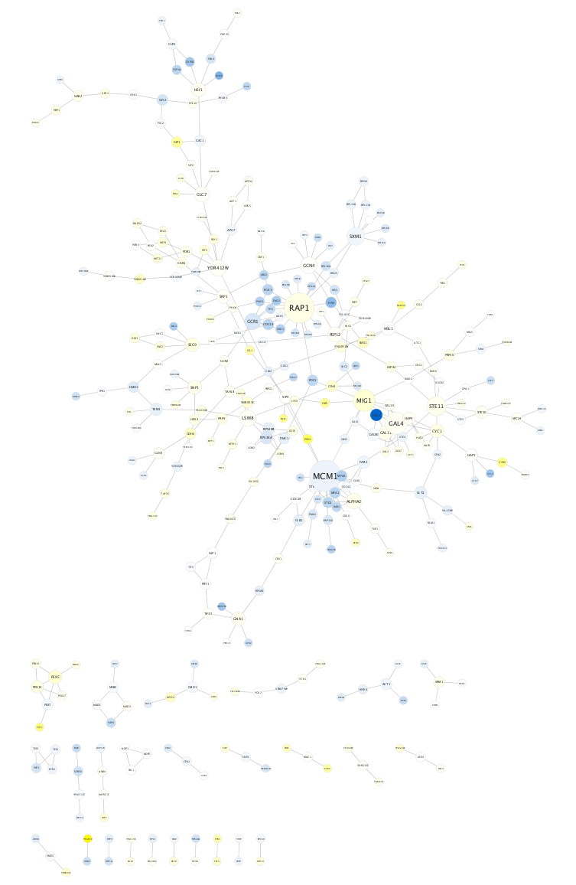
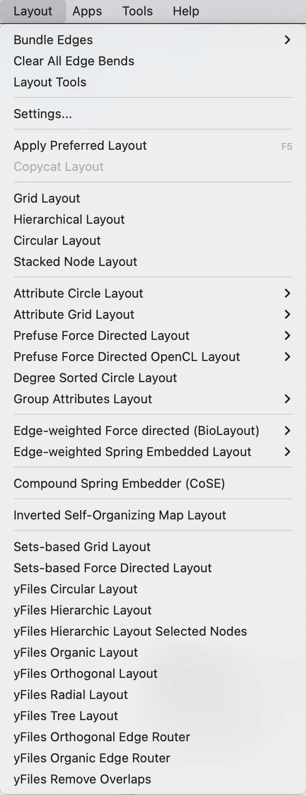
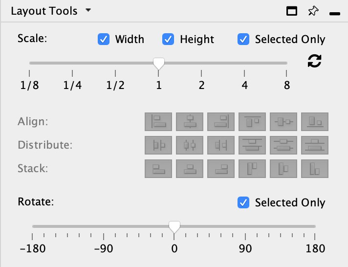
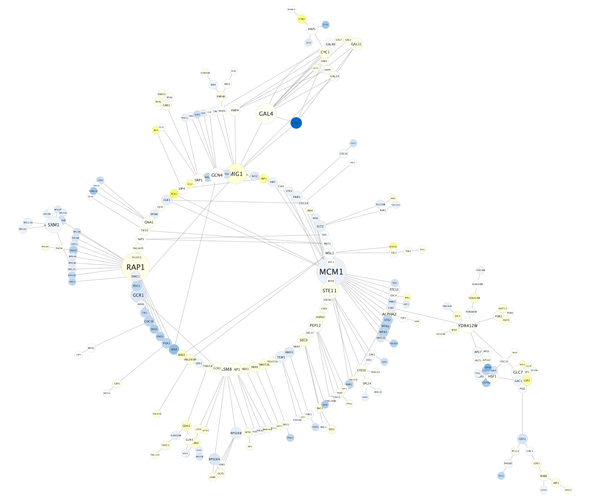
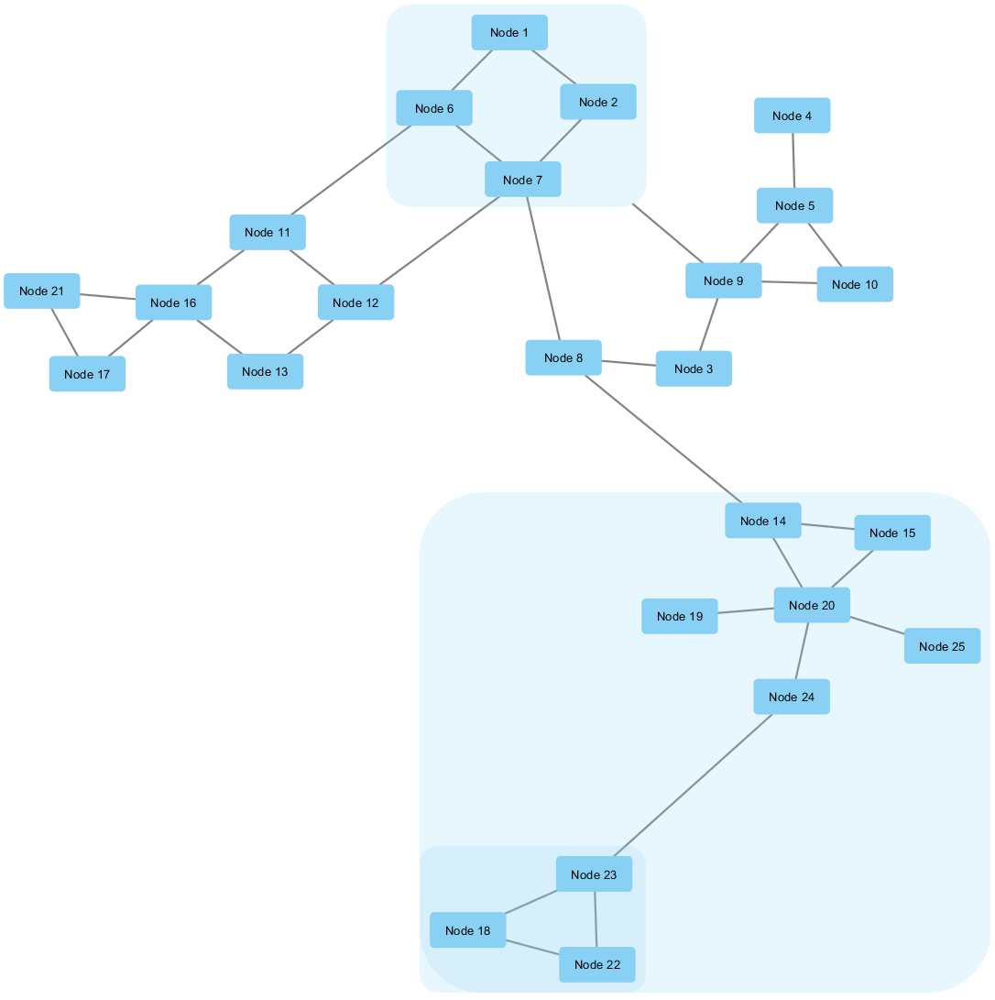
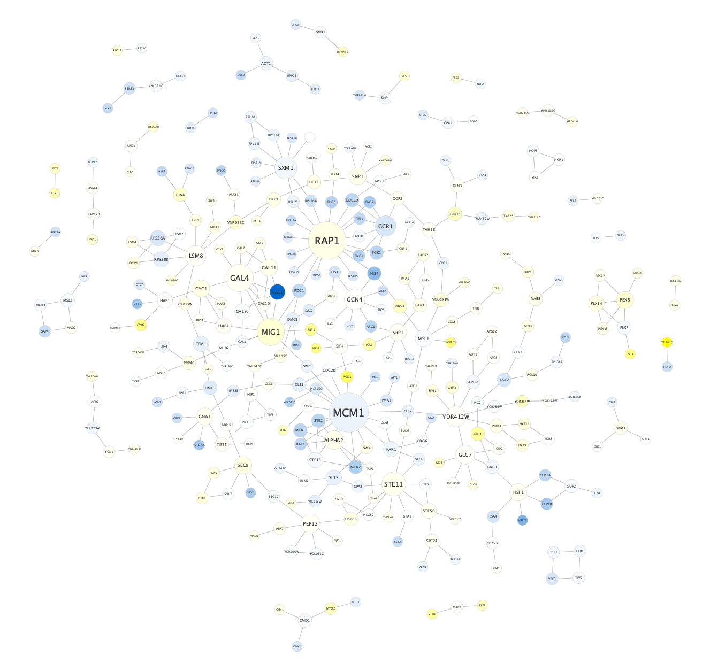
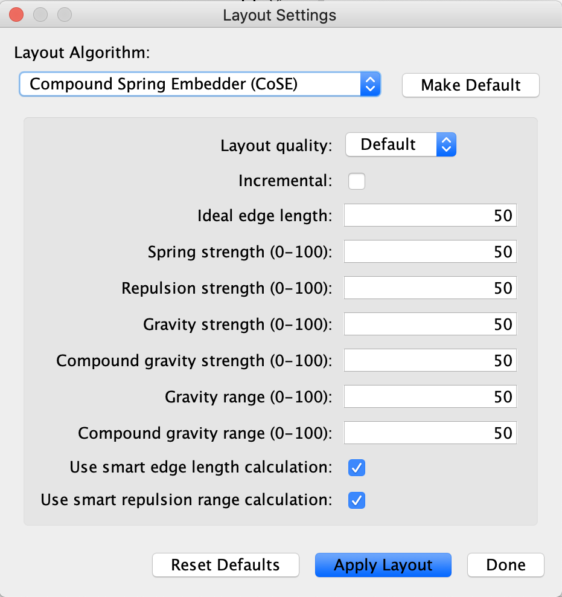

Network Layout
Cytoscape includes many automatic layout algorithms, for organizing the network visually. All available layout algorithms are listed in the Layout menu, including any layout aglorithms loaded by apps. This tutorial will describe how to apply a layout to your network, give a few examples of commonly used layout algorithms, and describe how layout algorithm parameters can be adjusted.
Applying a Layout Algorithm

- Load the Yeast Perturbation.cys session file from the Starter Panel.
- To see the whole network, select View → Fit Content.
The network layout used in this session file is the Prefuse Force Directed Layout. This layout is based on the algorithm implemented as part of the prefuse toolkit. The algorithm is very fast and with the right parameters can provide a very visually pleasing layout. The Force Directed Layout can also use a numeric edge attribute as a weight for the length of the spring.
Layout Menu
Layouts are available from the Layout menu.
Some Cytoscape apps may add additional layout algorithms to the Layout menu.
The yFiles layouts are not immidiately available after installing Cytoscape, but can be installed via the App Manager. Installation requires a license agreement.

Tool Panel
For manual manipulation of the network layout, a set of Node Layout Tools are available in the Layout Tools tab of the Control Panel or via Layout → Node Layout Tools. These tools include a set of tools for scaling, aligning, distributing, stacking and rotating the network and nodes. Checking the Selected Only checkbox will restrict the actions to selected nodes.

Examples of Layout Algorithms
Similarly to Prefuse Force Directed, the Edge-weighted spring-embedded layout is also based on a “force-directed” paradigm as implemented by Kamada and Kawai (1988). Network nodes are treated like physical objects that repel each other, such as electrons. The connections between nodes are treated like metal springs attached to the pair of nodes. These springs repel or attract their end points according to a force function. The layout algorithm sets the positions of the nodes in a way that minimizes the sum of forces in the network.

Examples of Layout Algorithms
The circular algorithm produces layouts that emphasize group and tree structures within a network. It partitions the network by analyzing its connectivity structure, and arranges the partitions as separate circles. The circles themselves are arranged in a radial tree layout fashion.

Examples of Layout Algorithms
The Compound Spring Embedder (CoSE) layout is based on the traditional force-directed layout algorithm with extensions to handle multi-level nesting (compound nodes), edges between nodes of arbitrary nesting levels and varying node sizes. It is the suggested Cytoscape layout for compound graphs, although it also works very well with noncompound graphs.


Layout Settings
- Select Layout → Settings.... to open the Layout Settings dialog.
- To change the settings for a particular algorithm, select it from the Layout Algorithm: drop-down. The relevant set of parameters will be displayed.
- When changes are complete, click Apply Layout to apply to your network.
